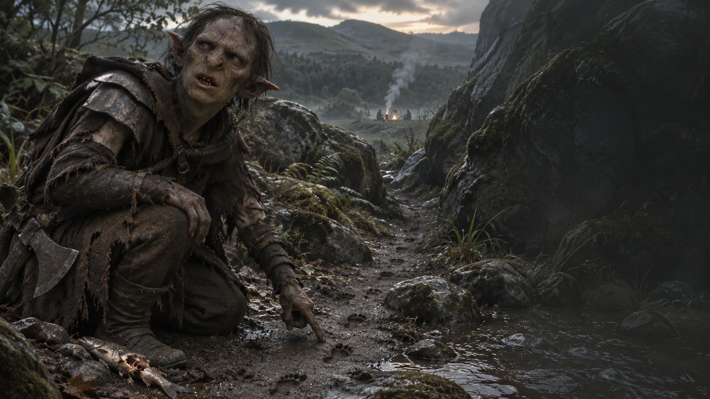

Chapitre IV · Sur la bonne piste
Les Traces de Gollum
Des empreintes fraîches. La proie se rapproche.
Examiner les tracesUne piste toute fraîche
Après avoir laissé le danger derrière vous, vous atteignez un ruisseau au pied des collines. Dans la terre humide, de petites empreintes s’enfoncent entre les pierres. À côté, un poisson à moitié dévoré frémit encore.
Cette fois, aucun doute : Gollum n’est pas loin. Vous vous agenouillez pour examiner les traces. Elles remontent vers un passage rocheux, tandis qu’une fumée légère s’élève derrière les arbres, plus bas dans la vallée.
Enfin une piste sérieuse. Et peut-être un repas chaud en contrebas. Essayez de vous souvenir de ce qui est prioritaire.
Le passage est étroit : votre armure risque de vous annoncer avant votre arrivée. En contrebas, vous distinguez une marmite et deux silhouettes autour du feu. Impossible de savoir si elles vous accueilleront à leur table… ou dans la marmite.